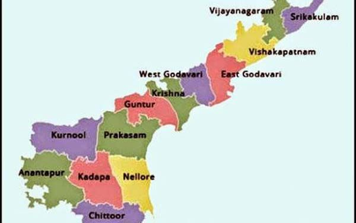

LET'S HAVE A LOOK AT THE TOUR MAP
BACK

WHERE TO VISIT , WHAT TO SEE?
SOME HOT PICKS(#HAVE_TO_VISIT)
- TIRUPATI - ANCIENT AND SACRED PILGRIMAGE SITES IN INDIA, LORD VENKATESHWARA , ANNAVARAM
- VIZAG - SCENIC BEAUTY OF THE BEACH AND FISH CULTIVATION
- ARAKU VALLEY - HILL STATION WITH MAJESTIC CAVES(BORRA CAVES)
- SRISAILAM - SRISAILAM DAM
- TIRUPATI - TEMPLE OF LORD MAHAVISHNU
- AMARAVATHI - PILGRIMAGE FOR THE BUDDHISTS
- ANANTHAGIRI - IDEAL PLACE FOR NATURE LOVERS
- VIJAYAWADA - SCRUMPTIOUS FRUITS, SENSATIONAL SWEETS AND SCENIC MARVELS
- ANANTAPUR - GLOWS WITH INDIAN HISTORY
- KURNOOL - HISTORIC VALUE WITH BEAUTIFUL SURROUNDING AREAS , MANTRALAYAM(HOLY TOWN) , ROLLAPADU WILDLIFE SANCTUARY , YAGANTHI - PERFECT WAY TO FEEL THE ANDHRA PRADESH TOURISM
- CHITTOOR - RELIGION, DEVOTION AND ARCHITECTURE , KAIGAL FALLS
- KAKINADA - PERFECT BLEND OF COSMOPILATAN LIFESTYLE AND OLD WORLD CHARM
- NELLORE - CITY ON THE BANKS OF RIVER PENNA
- GANDIKOTA - BELUM CAVES AND RUINS OF GANDIKOTA FORT
- LEPAKSHI - SEVERAL FASCINATING ARCHEOLOGICAL SITES AND BEAUTIFUL ANCIENT TEMPLES
- RAJAHMUNDRY - FOUNDED BY RAJA CHALUKYA KING RAJA RAJA NARENDRA AFTER WHOM IT WAS NAMED.
- PUTTAPARTHI - APCRYPHAL FIGURE OF SAYTHYA SAI BABA.
- NAGARJUNAKONDA - NAGARJUNA SAGAR RESERVIOR
- HORSLEY HILLS - OOTY OF ANDHRAPRADESH
- RISHIKONDA BEACH
- CORINGA WILDLIFE SANCTUARY
- MAREDUMILLI
- ORAVAKALLU ROCK GARDEN - IGNEOUS ROCK STRETCH GARDEN
- AHOBILAM TEMPLE - LORD NARASIMHA SWAMY TEMPLE
- RAYADURG - BRIM WITH MONUMENTS HARBOURING RICH CULTURAL HERITAGE
- NAGALAPURAM - HIDDEN LIKE A JEWEL BEHIND THE LUSH GREEN FORESTS OF ANDHRA PRADESH
- LAMBASINGI - KASHMIR OF ANDHRA PRADESH
SOME_OTHER_ATTRACTIONS
- GUNTUR - CULTURALLY DIVERSE CIVIL CENTER
- VIZIANAGARAM - PICTURESQUE VISTAS, CULTURAL HERITAGE
- SAMALKOT - HOLY PLACE FOR DEVOTEES OF LORD SHIVA
- BHAVANI ISLAND - VIJAYWADA
- DRAKSHARAMAM - MOST POWERFUL AND PROMINENT TEMPLES OF LORD SHIVA
- TADIPATRI - ANCIENT TEMPLES WITH RELICS FROM CENTURIES